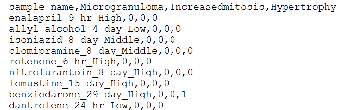

Each team has to consist of 3 people and has a unique team name.
Each team need to submit their reproducible code at the end of contest.
At each stage, each team submit a CSV format file containing final prediction results at the end of contest.
The file name should be in this format: Team name_stage index(e.g. RocheTeam_stage1).
The submission at each stage should have 3 columns. The First column is headed by “sample name” which contains name for each sample. The second and third columns are “Microgranuloma” and “Hypertrophy” that contains prediction for each pathology.

Each team have 10 minutes for the presentation.
Each team need to mention which method they tried at stage2 and number of features that they used for prediction.
For stage3, participants should introduce what is additional information they used to increase prediction power.
Copyright © 2018 F.Hoffmann-La Roche Ltd-All rights reserved.